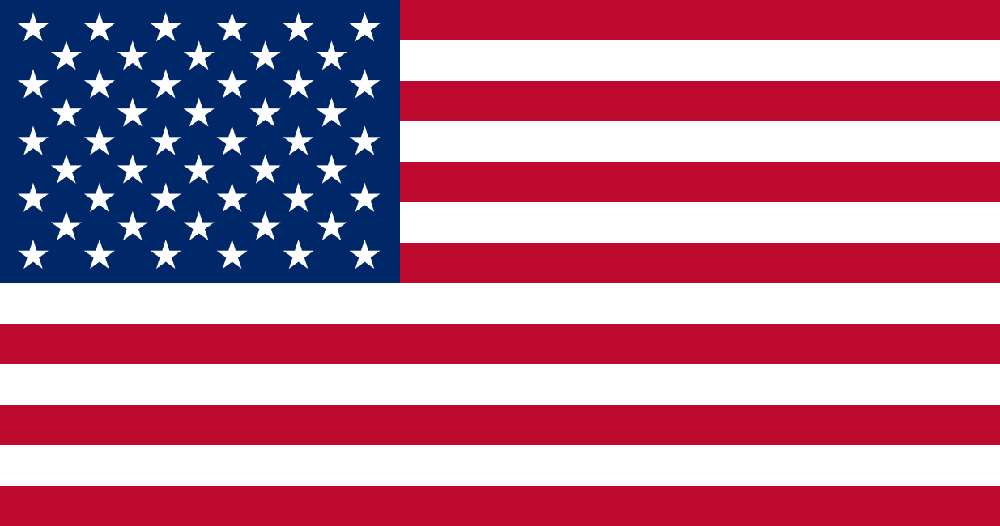
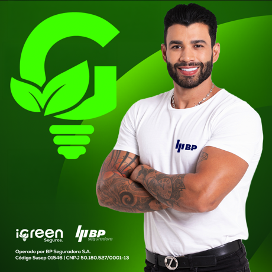
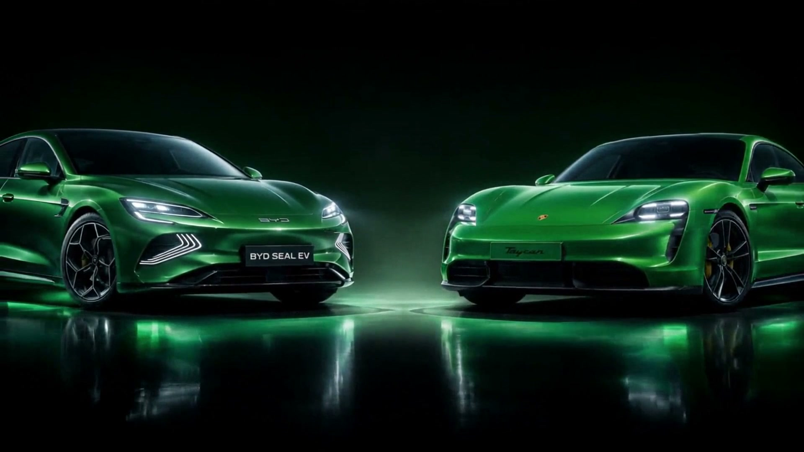

Conexão Livre
A solução ideal para empresas conectadas em alta tensão que desejam reduzir custos com energia.
- Até 30% de economia
- Sem investimentos ou obras.
- Recorrência Direta até 2% + Extra
- Recorrência de Rede até 1,5%
Enriquecemos vidas conectando energia, telefonia, seguros, tecnologia e oportunidades de negócio em um único ecossistema, transformando conexões em renda recorrente.
Uma trajetória construída com propósito, inovação e milhares de licenciados ao redor do mundo.




Projetada para escalar o maior
ecossistema sustentável do Brasil.
Conexões que se completam, cada solução fortalece a rede e multiplica a recorrência de quem constrói.
A solução ideal para empresas conectadas em alta tensão que desejam reduzir custos com energia.
A solução ideal para clientes residenciais ou pequenas empresas que desejam economizar.
Geração solar própria no imóvel do cliente: a iGreen entrega projeto, instalação e suporte técnico.
A solução ideal para quem deseja gerar a própria energia SEM PRECISAR INVESTIR.
A solução perfeita para clientes que buscam telefonia com planos justos e internet de alta velocidade, com a maior cobertura 5G do Brasil.
A solução ideal para proteger financeiramente seu carro e você contra prejuízos causados por imprevistos de forma simples e sem burocracia.
Multiplique sua rede e seus ganhos! Indique novos licenciados, forme sua equipe.
Cada conexão ativa gera comissão recorrente: enquanto o cliente permanece na rede, o resultado se acumula e cresce, mês após mês, sem recomeçar do zero.


GP até 4% · GI até 1% · RO até 2% · EQ até 0,5%
sobre a fatura iGreen · recorrenteGP 2% + bônus · GI 0,5% · RO até 0,75% · EQ até 0,25%
sobre a fatura iGreen · recorrenteGP até 2% · GI até 0,5% · RO até 0,75% · EQ até 0,25%
sobre a fatura iGreen · recorrenteGP 10% · GI 1% · RO até 1,5% · EQ até 0,5%
sobre o valor do projeto completoGP R$ 7,00 · GI R$ 1,00 · RO até R$ 7,00 · EQ até R$ 2,00
sobre cada plano · recorrenteGP 5% · GI 1% · RO até 5% · EQ até 1%
sobre cada seguro · recorrenteApp iGreen Connect | Todas as soluções trabalham de forma integrada para oferecer uma experiência completa e conectada.
Começar agoraRecorrência, clientes, carteira e Clube de Descontos: acompanhe tudo em tempo real, direto do celular.
Escaneie para
baixar o app

Cada licenciado conecta soluções diferentes e constrói a própria recorrência. Estes são alguns nomes da rede iGreen.

Acionista 5K e Acionista 12K: os dois níveis onde o reconhecimento sai do papel e estaciona na sua garagem: 100% elétricos, plotagem verde escuro alto brilho com logo iGreen no capô. Não é só um carro: é o símbolo público de que a recorrência venceu.
100% elétrico · plotado iGreen · faixa R$ 300 mil
Bônus do nível Acionista Royal 5K: média de ganhos de R$ 200.000/mês. O carro chega junto com a liberdade que ele representa.
100% elétrico · 0 km · plotado iGreen
Bônus do nível Acionista Embaixador 12K: média de ganhos de R$ 500.000/mês. O topo absoluto do plano: patrimônio, história e legado.
Selecione uma ou mais soluções e informe a quantidade de clientes que deseja conectar. Com base nessas informações, apresentaremos uma projeção estimada dos seus ganhos recorrentes por até 10 anos.
É possível selecionar uma ou mais soluções.
Os valores apresentados são estimativas calculadas com base nas médias de contas com R$ 350,00 de energia (4% de comissão), R$ 300,00 de seguros (5% de comissão) e R$ 7,00 de comissão de telecom. Têm caráter meramente ilustrativo.
Avance de nível, desbloqueie benefícios exclusivos e conquiste qualificações que reconhecem a sua evolução.
Não será construído por quem espera. Escolha sua licença e comece agora a empreender no ecossistema iGreen.
Conexão Telecom e Seguros. O ponto de partida para começar a empreender com a iGreen.
Uma licença, todas as possibilidades. Acesso total a todas as conexões do ecossistema.